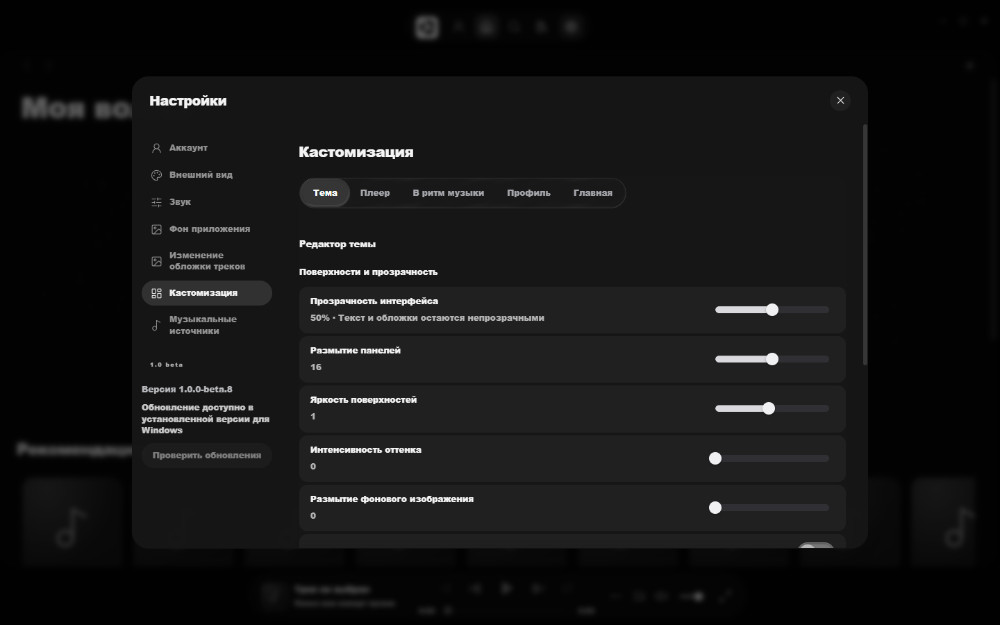
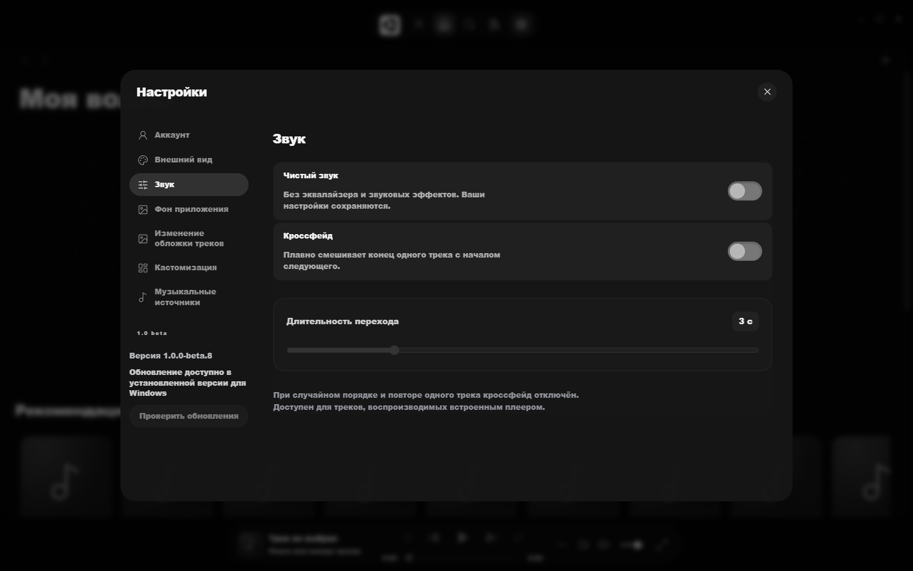

Плеер · Windows 10 / 11 · x64
Музыкальный плеер для Windows.
Ваши файлы, SoundCloud и YouTube в одном окне. «Моя волна» подбирает треки по лайкам, дослушиваниям и пропускам.

3источника в одной медиатеке: ваши файлы, SoundCloud, YouTube
6режимов волны: моя, открытия, любимое, энергия, спокойствие, случайно
RU / ENинтерфейс на двух языках
Возможности
Всё для того, чтобы слушать.
- 01
Одна медиатека
Свои MP3, FLAC, WAV, OGG и AAC рядом с треками из SoundCloud и YouTube. Один поиск по трекам, исполнителям, альбомам и плейлистам.
- 02
«Моя волна»
Бесконечный поток, который учитывает лайки, дослушивания, пропуски и плейлисты. Чередует исполнителей и не повторяет то, что звучало последние шесть часов.
- 03
Тексты песен
Синхронные строки, которые подсвечиваются вместе с музыкой в полноэкранном плеере.
- 04
Звук
Эквалайзер, кроссфейд между треками и режим «Чистый звук» без эффектов.
- 05
Чарты
Популярное в каталоге и «Мой чарт» за 7 или 30 дней по вашим реальным прослушиваниям.
- 06
Last.fm
Скробблинг прослушиваний. История с других устройств помогает «Моей волне» точнее угадывать вкус.
- 07
Оформление под себя
Редактор темы, свой фон из фото, GIF или видео, прозрачность, шрифты, расположение плеера и меню.
- 08
На рабочем столе
Мини-плеер «остров» и 3D-персонаж на рабочем столе, через которые можно управлять музыкой, не открывая окно.
Как выглядит
Настоящие экраны.


Как работает волна
Учится на том, что вы слушаете.
- Лайк
- сильнее всего поднимает исполнителя и жанр
- Дослушали
- трек и похожие звучат чаще
- Пропустили в начале
- такое волна покажет реже
- Дизлайк
- трек больше не попадётся
- Last.fm
- добавляет любимых артистов с других устройств
Четыре шага
Как установить.
- 01
Скачайте установщик
Файл
ParadoxMusic-…-Setup.exeсо страницы релизов. - 02
Запустите его
Можно выбрать папку. Установка только для вашего пользователя, права администратора не нужны.
- 03
Разрешите запуск
Сборка пока без цифровой подписи. Если Windows покажет SmartScreen, нажмите «Подробнее» → «Выполнить в любом случае».
- 04
Включите музыку
Добавьте свои файлы или найдите трек в поиске. Аккаунт не обязателен.
Ваша музыка остаётся у вас.
Медиатека, история и статистика хранятся на вашем компьютере. Ключи сервисов шифруются средствами Windows. Приложение не показывает рекламу.
Вопросы
Частые вопросы.
Это бесплатно?
Да. ParadoxMusic распространяется бесплатно, исходный код открыт под лицензией MIT.
Какие форматы поддерживаются?
MP3, WAV, FLAC, OGG, Opus, AAC/M4A и WebM. Воспроизведение зависит от декодера Chromium и конкретного файла.
Почему Windows предупреждает при запуске?
Сборка пока не подписана платным сертификатом, поэтому SmartScreen её не знает. Исходники открыты, сборку можно проверить или собрать самому.
Как обновляться?
Приложение само проверяет новые версии: «Настройки» → «Проверить обновления».
Есть версия для macOS или телефона?
Сейчас только Windows 10 и 11, 64 бита.
Нужен ли аккаунт?
Нет. Можно продолжить без аккаунта, музыка и настройки сохранятся на компьютере.